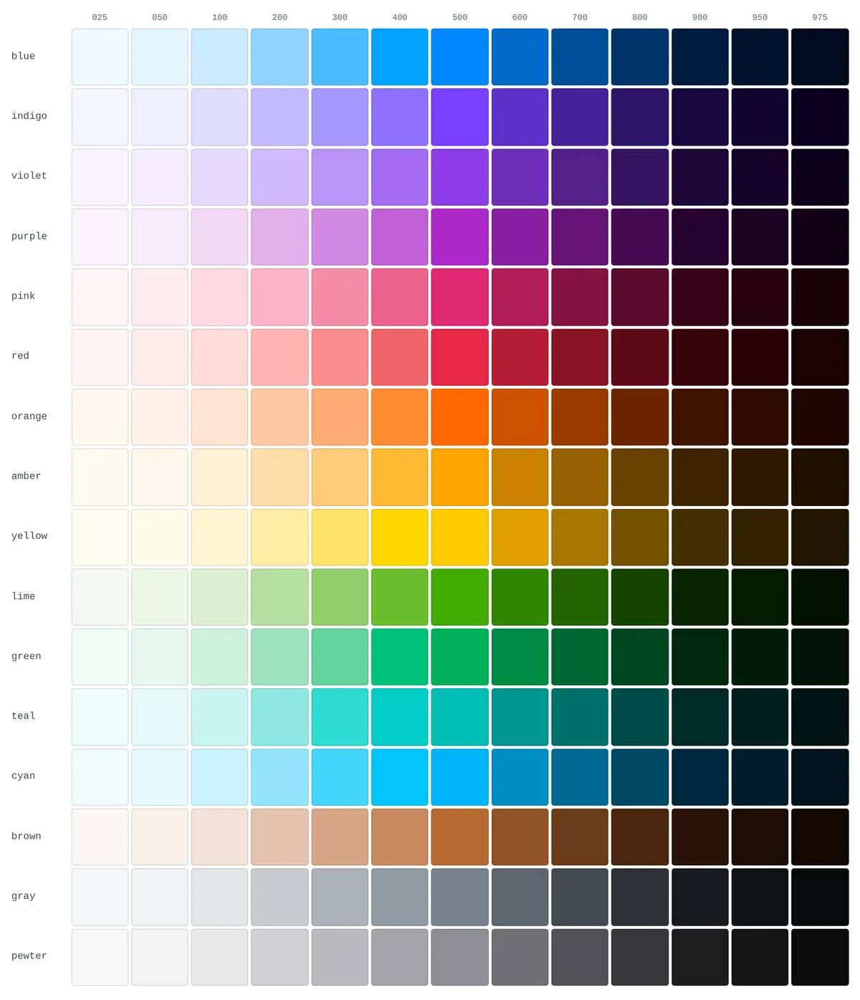
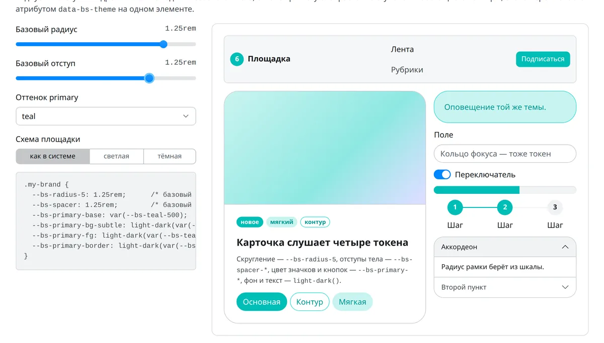
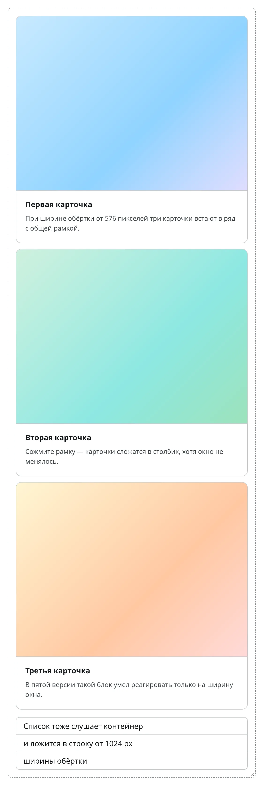
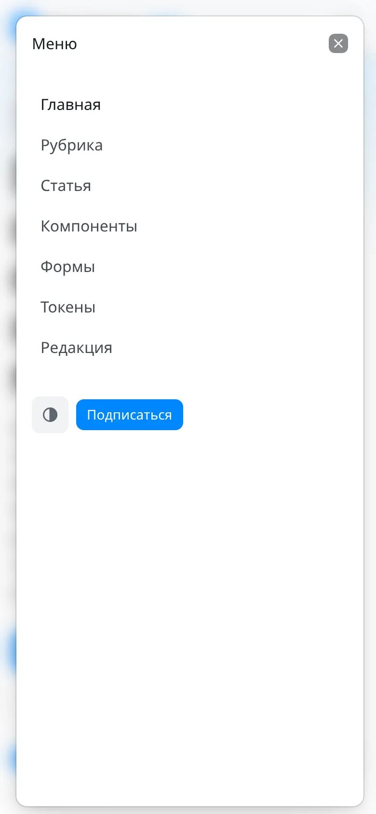
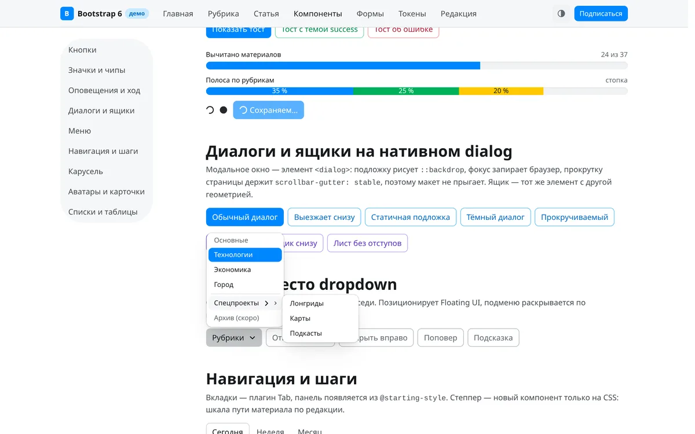
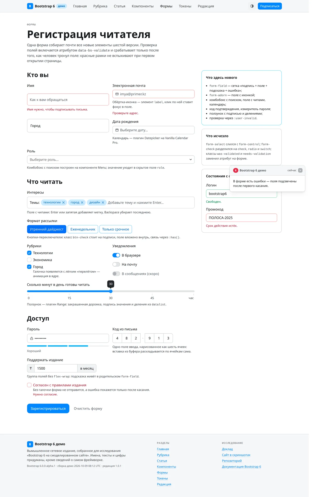
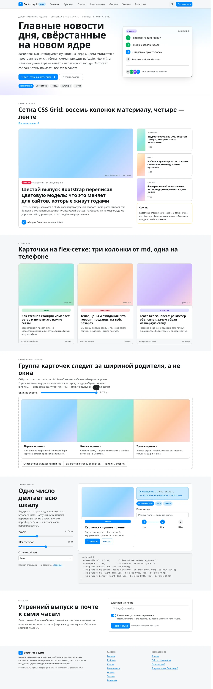
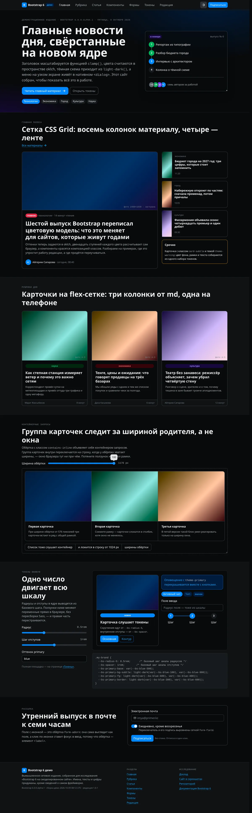

глава 01
Резюме
Доклад отвечает на вопрос, чем силён шестой выпуск Bootstrap и годится ли он уже сегодня для сайтов, которые живут годами, — в первую очередь для новостных. Ответ двойной. Как инженерная конструкция шестая версия сильна тем, что перенесла оформление из препроцессора в браузер: почти каждая переменная Sass стала переменной CSS, цвета считает сама страница, модальные окна и аккордеоны работают на родных элементах HTML, а каскад разложен по слоям. Как продукт, который можно ставить на боевой сайт, она пока альфа: первый выпуск вышел 8 октября 2026 года, интерфейсы могут измениться до беты, а порог поддерживаемых браузеров поднят до версий осени 2024 года без единого запасного пути 12.
Чтобы судить не по анонсу, а по вёрстке, исследование построило на альфе вымышленное сетевое издание — демо-сайт Bootstrap 6. У него семь страниц: главная, рубрика, статья, витрина компонентов, формы, площадка токенов и редакционная панель. С них снято сорок три экрана в настоящем Chromium 153 — для десктопа, телефона, тёмной схемы и открытых состояний. Собственных стилей у сайта один файл, и в нём нет ни одного цвета в шестнадцатеричной записи: всё взято из токенов ядра. Так проверялось главное обещание версии — что оформление настраивается без пересборки.
Три находки держат вывод. Первая: карты токенов и композиция тем работают, как заявлено, — один ползунок двигает всю шкалу радиусов, выбор оттенка перекрашивает кнопки, значки, оповещения и кольца фокуса разом, а тёмная схема приходит из функции light-dark() без дублирования правил. Вторая: цена перехода выше, чем у любого прежнего мажора. Переименованы классы кнопок, окон, меню, сетки и утилит; шкала отступов выросла с шести ступеней до тринадцати, и цифра в классе больше не значит того же, что в пятой версии; сжатый CSS потяжелел с 226 до 372 килобайт, а сборка JavaScript — с 78 до 214. Третья: в самой альфе найдены расхождения, которые стоит знать до перехода, — тени собраны на относительном цветовом синтаксисе, который по собственной политике проекта лежит выше порога браузеров, а комбобокс при запуске пишет в консоль ошибку о втором экземпляре. Всё это вынесено в реестры, а не спрятано в тексте.
Для редакций, сидящих на Joomla, вывод практический: ядро системы везёт Bootstrap пятой ветки, и шестая в него не войдёт раньше, чем выйдет из альфы; пробовать её стоит в дочернем шаблоне и на лонгридах, где выигрыш от нативных диалогов, текучей типографики и контейнерных запросов виден сразу.
глава 02
Что случилось 8 октября
Проект Bootstrap родился в августе 2011 года в Twitter как внутренний набор для единообразия интерфейсов и с тех пор, по подсчёту авторов, установлен больше 1,75 миллиарда раз 1. Четвёртая версия вышла 18 января 2018 года, пятая — 5 мая 2021 года, последний выпуск пятой ветки, 5.3.8, — 26 августа 2025 года; первый альфа-выпуск шестой лёг в реестр npm 8 октября 2026 года в 16:47 по всемирному времени 34. Между четвёртой и пятой прошло три года и четыре месяца, между пятой и первой альфой шестой — пять лет и пять месяцев.
Анонс написал основатель проекта Марк Отто. Он не скрывает паузы: последние годы ушли на его компанию Pierre и её продукты, и к Bootstrap он вернулся, по его словам, потому что людей, строящих программы, стало больше, чем когда-либо, хотя код они пишут всё реже. Отсюда и формула назначения шестой версии — открытая дизайн-система «для любого, человека или ИИ, новичка или профессионала». Вторым автором версии назван сопровождающий Жюльен Дерамон; в списке участников ветки разработки — восемнадцать человек 1.
Анонс открывает серию из семи записей: обзор и Sass, расширенные цвета и темы, компоненты, сетка, формы, префиксы и утилиты, плагины JavaScript. На момент сдачи доклада вышла первая; остальные обещаны по одной 1. Поэтому главным источником сведений о версии в докладе служит не блог, а документация и исходный код ветки main репозитория по состоянию на 8 октября 2026 года: 141 файл документации, 33 примера, 11 файлов-навыков, 20 плагинов, 117 файлов Sass 52.
Выпуск объявлен альфой в точном смысле: до беты обещаны ещё альфы, и «вещи могут измениться существенно». Обратная связь принимается в разделе обсуждений репозитория, ошибки — в задачах, правки — запросами на слияние. Пятая ветка остаётся на поддержке: выпуск 5.4.0 обещан «как только получится», а дата окончания поддержки будет объявлена позже 16.
глава 03
Порог: браузеры, которых требует шестая версия
Шестая версия требует Chrome и Edge от 130-й версии, Firefox от 132-й, Safari от 18-й на macOS, iOS и iPadOS. Пятая работала от Chrome и Firefox 60 и Safari 12. Порог поднят на семьдесят выпусков Chrome, и ниже него нет ничего: ни запасных значений, ни вендорных префиксов, ни полифилов. Страница в старом браузере не «немного поедет» — она отрисуется неверно, о чём руководство по миграции предупреждает крупно 172.
Документация объясняет порог по функции. Жёсткую нижнюю границу задаёт light-dark(): Chrome 123, Firefox 120, Safari 17.5 — ниже неё сборочный конвейер заменял бы функцию полифилом на переменных, а полифил ломает переключение тёмной схемы атрибутом data-bs-theme. Остальные функции поднимают планку выше: селектор :has() требует Firefox 121, content-visibility с дискретными переходами — Firefox 125 и Safari 18, атрибут name у элемента details для взаимоисключающих аккордеонов — Firefox 130, утилита text-wrap: balance — Chrome 130, небуферизованный backdrop-filter для подложки диалогов — Safari 18 7.
Выше порога лежат функции, которых версии пришлось ждать, и документация честно их перечисляет: относительный цветовой синтаксис rgb(from …) — Chrome 131 и Firefox 133, «ближайший промах, на одну версию выше нашего порога Chrome»; якорное позиционирование — Firefox 147 и Safari 26, оно избавило бы меню, подсказки, поповеры и комбобокс от библиотеки Floating UI; команды-инвокеры command и commandfor — Chrome 135, Firefox 144, Safari 26.2; @scope — Firefox 146; стилевые контейнерные запросы — Firefox 151. Авторы пишут, что седьмая версия выйдет быстрее прежних мажоров именно ради этих функций 17.
Здесь доклад фиксирует первое расхождение. Скомпилированный bootstrap.css альфы содержит относительный цветовой синтаксис — запись oklch(from …) встречается в нём тридцать пять раз, все в токенах теней --bs-box-shadow-*: альфа каждого слоя тени вычисляется из базового цвета именно этим синтаксисом 89. По политике самого проекта этот синтаксис лежит выше порога. Значит, в Chrome 130 и Firefox 132 — то есть на объявленной нижней границе — объявление box-shadow с недопустимым значением отбрасывается целиком, и компоненты остаются без теней. Исследование не проверяло это на живом браузере тридцатой версии (под рукой был Chromium 153), поэтому запись идёт в реестр расхождений как Р-02 с оговоркой, а не как доказанный дефект.
Для казахстанского заказчика порог означает одно действие до любых решений: посмотреть в аналитике долю посетителей ниже Chrome 130 и Safari 18. Исследование таких данных не имело, и это белое пятно М-02.
глава 04
Архитектура: Sass для логики, CSS для вида
Главный тезис версии сформулирован на странице «Подход»: Sass — для программной настройки, CSS — для визуальной. Препроцессор по-прежнему собирает файлы, крутит циклы, порождает варианты компонентов и утилиты; но всё, что касается вида — цвета, отступы, радиусы, шрифты, — живёт в переменных CSS и меняется в браузере. В пятой версии переменные CSS были вторым, неполным слоем поверх переменных Sass; в шестой они стали первым 10.
Устройство держится на трёх решениях. Первое — модульная система Sass: файлы подключаются директивами @use и @forward, а старый @import объявлен устаревшим и для настройки не поддерживается. Точка входа bootstrap.scss только переадресует: сначала конфигурация, цвета, тема и корень, затем содержимое, раскладка, формы, кнопки, двадцать пять компонентных файлов, помощники и утилиты. Переопределение делается одной конструкцией @use "bootstrap" with (…), в которую передают и глобальные флаги, и карты токенов 25.
Второе — карты токенов. У каждого компонента есть карта вида $alert-tokens, где ключи — имена переменных CSS, а значения — ссылки на глобальные токены: --alert-padding-x: var(--spacer), --alert-border-radius: var(--radius-5), --alert-bg: var(--theme-bg-subtle, var(--bg-1)). Примесь tokens() выводит карту на класс компонента как обычные объявления переменных. Карта $root-tokens делает то же для :root и :host — второй селектор добавлен, чтобы теневые деревья веб-компонентов видели токены; кто переопределит только :root, оставит веб-компоненты без своих значений 1092.
Третье — функция defaults(). Она сливает карту пользователя с картой ядра, а ключи со значением null удаляет. Чтобы поменять один токен, не нужно переписывать всю карту; чтобы добавить свой — тоже. Та же функция собирает глобальные карты: отступы, радиусы, размеры шрифтов, цвета темы, тени, соотношения сторон. В пятой версии карту $theme-colors приходилось заменять целиком 82.
Префикс bs-, который в пятой версии протягивался через каждое объявление переменной Sass $prefix, теперь ставит PostCSS на сборке плагином postcss-prefix-custom-properties: в исходниках переменные пишутся без префикса, в готовом CSS — с ним. Сменить префикс можно только в настройке PostCSS 111.
Весь фреймворк разложен по слоям каскада: colors, config, root, reboot, layout, content, forms, components, custom, helpers, utilities. Слой — это ярус в каскаде, объявленный директивой @layer; правило из позднего слоя перекрывает правило из раннего, какой бы ни была специфичность селектора. Поэтому утилита всегда побеждает компонент, а помощник — вложенные стили компонента. Слой custom ядро оставляет пустым, чтобы проект клал туда свои стили: они перекроют компоненты, но не утилиты. Документация признаёт ограничение: Sass не умеет оборачивать @use и @forward в @layer, поэтому слои объявляются в _root.scss и применяются внутри каждого файла отдельно 92. Здесь второе расхождение источников: файл AGENTS.md в корне репозитория перечисляет двенадцать слоёв, с theme между colors и config, а объявление в _root.scss и скомпилированный CSS содержат одиннадцать 129; принято то, что в коде (Р-03).
Пониже специфичность селекторов опущена и другим способом: конструкция :where() встречается в скомпилированном CSS 302 раза, а директива @property регистрирует восемь переменных, которыми пользуется API утилит, как ненаследуемые, чтобы значение, поставленное утилитой на родителе, не просочилось в потомков 2.
Инструменты сборки тоже заменены. Исходники JavaScript переведены на TypeScript, и пакет везёт собственные объявления типов. Rolldown заменил Rollup и Babel: он сам снимает типы и понижает синтаксис, целый слой инструментов из репозитория исчез. Тесты идут в Vitest в настоящем Chromium через Playwright вместо Karma. Документацию собирает Astro седьмой версии с поиском Pagefind, а общие компоненты трёх сайтов проекта — документации, иконок и блога — вынесены в закрытый пакет @twbs/bui 1213141516. Третье расхождение — опять между AGENTS.md и кодом: файл называет Astro пятой версии, а package.json требует astro ^7.3.2, как и анонс (Р-01) 125.
глава 05
Цвет: oklch, color-mix и light-dark
Цветовая модель — самое глубокое изменение версии, и у него три этажа. Нижний — шестнадцать оттенков, каждый записан одним значением в пространстве oklch: синий oklch(60% 0.24 240), красный oklch(60% 0.22 20), жёлтый oklch(88% 0.24 88). К двенадцати оттенкам пятой версии добавились янтарный amber, лаймовый lime, фиолетовый violet, коричневый brown и оловянный pewter 17.
Средний этаж — ступени. От базовой ступени 500 вверх идут шесть светлых, 025–400, полученных подмешиванием белого от 94 до 20 процентов, и шесть тёмных, 600–975, с подмешиванием чёрного от 16 до 76 процентов. Смешение делает браузер функцией color-mix() в пространстве oklch; пространство задаётся переменной $color-mix-space. Итог — 208 цветовых токенов на :root, которые площадка демо-сайта читает и показывает без единой константы в разметке 17.


--bs-{оттенок}-{ступень}, ни одно значение не задано руками.Верхний этаж — семантика. Восемь тем — primary, accent, success, danger, warning, info, inverse, secondary — описаны картой $theme-colors, и у каждой девять ролей: base, fg, fg-emphasis, bg, bg-subtle, bg-muted, border, focus-ring, contrast. Роль ссылается на ступень оттенка парой для светлой и тёмной схемы: --primary-fg: light-dark(var(--blue-600), var(--blue-400)), --primary-bg-subtle: light-dark(var(--blue-100), var(--blue-900)). Отдельные карты задают нейтральные поверхности --bg-body и --bg-1…--bg-4, ступени текста --fg-body и --fg-1…--fg-4, рамки 18.
Темы прикладываются классами. .theme-primary ставит на элемент переменные --bs-theme-bg, --bs-theme-fg, --bs-theme-border, --bs-theme-contrast и остальные, а компонент их читает. Поэтому кнопка больше не бывает «синей кнопкой» .btn-primary: она собирается из формы и темы — class="btn-solid theme-primary", class="btn-outline theme-danger". То же для значков, оповещений, аккордеонов, таблиц, степперов, аватаров, пагинации, чипов. Вложенный блок возвращается к значениям по умолчанию классом .theme-reset, который ставит каждой переменной --theme-* значение initial — именно initial, а не unset, потому что unset снова взял бы значение у родителя 182.
Тёмная схема встроена в тот же механизм. Корень объявляет color-scheme: light dark, и каждая пара light-dark() выбирает значение по предпочтению системы; атрибут data-bs-theme="dark" на любом элементе переключает color-scheme для поддерева, а флаг $enable-dark-mode удалён — тёмный режим компилируется всегда 9192. Тени в тёмной схеме углубляются сами: токен --bs-shadow-strength равен 1 в светлой и 2,4 в тёмной, а каждая тень собрана из нескольких слоёв с альфой, вычисленной из цвета тени. Цвет и сила переопределяются локальными ненаследуемыми переменными --bs-sc и --bs-so, которые ставят утилиты .shadow-{цвет} и .shadow-opacity-{n}, — так перекраска тени не просачивается во вложенные тени 820. Корень ставит и accent-color: var(--primary-base), поэтому родные флажки, переключатели, ползунки и полосы хода красятся в цвет темы без единого класса 2.
Одно уточнение, важное для тех, кто захочет перекрашивать сайт на лету. Анонс говорит о палитрах, «которые автоматически подстраиваются под смену базового цвета» 1. Это верно на этапе компиляции: передав $blue через @use … with, вы получите все тринадцать ступеней заново. Но в готовом CSS ступени записаны через буквальное значение базы — --bs-blue-100: color-mix(in oklch, var(--bs-white) 80%, oklch(60% 0.24 240deg)), — а не через var(--bs-blue-500). Переопределив --bs-blue-500 в браузере, вы не сдвинете ступени 100 или 900. Чтобы перекрасить тему во время выполнения, нужно переназначить её роли: демо-сайт делает это восемью строками, подставляя ступени другого оттенка, и этот приём стоит знать заранее (запись М-05 в реестре).


глава 06
Сетка и адаптивность: префиксы, новые точки, контейнерные запросы
Самое заметное изменение в классах — префикс вместо инфикса. Было .d-md-none, стало .md:d-none; было .col-lg-6, стало .lg:col-6; было .opacity-50-hover, стало .hover:opacity-50. Анонс не скрывает источник: «это прямая копия того, как Tailwind делает адаптивность, и да, это лучше, чем инфикс, стоявший в пятой версии словно наугад» 121. Правило действует для утилит, сетки, контейнеров, навбара, ящика, таблиц, списков, липких элементов, стеков, диалога и печати; в HTML двоеточие пишется как есть: class="md:d-none" 2.
Префикс не говорит, какой запрос за ним стоит, и это стоит помнить. Утилиты, колонки сетки, контейнеры, ящики и адаптивные таблицы слушают окно; стеки, колонки CSS Grid, раскрытие навбара, горизонтальные списки, группы карточек и стопочные таблицы слушают контейнер. Для вторых родителю нужен класс .contains-inline или .contains-size, иначе адаптивный класс не сработает вовсе 222.
Точки перелома сдвинулись: lg — с 992 до 1024 пикселей, xl — с 1200 до 1280, бывшая xxl стала 2xl и выросла с 1400 до 1536; контейнеры выросли соответственно до 1200 и 1440 пикселей, контейнер lg остался 960. Медиазапросы записаны диапазонами — @media (width >= 768px) — вместо min-width и max-width 82. Сетка на flex осталась двенадцатиколоночной, а сетка на CSS Grid — классы .grid и .g-col-* — получила утилиты .grid-cols-1….grid-cols-6, .grid-cols-subgrid и .grid-auto-flow 2.
Шкала отступов — главная ловушка миграции. В пятой версии ключей было шесть: 0, 0,25, 0,5, 1, 1,5 и 3 rem. В шестой их тринадцать с шагом 0,125–0,25 rem, и прежние значения уехали на другие ключи: p-3 означало 1 rem, теперь означает 0,5 rem; 1 rem теперь p-5, 1,5 rem — p-7, 3 rem — p-12. Поиск и замена по классам не поможет, нужна таблица соответствий 2.
Шкала радиусов тоже стала числовой: десять ступеней --radius-0…--radius-9 от одного базового значения $radius: .5rem плюс --radius-pill; .rounded по-прежнему 0,5 rem, но .rounded-3 теперь 0,25 rem вместо 0,5. Размеры шрифтов — десять ступеней от xs до 6xl, и с ступени lg размер задан функцией clamp(): он растёт вместе с окном в заданных границах, поэтому библиотека RFS удалена. Классы .display-1….display-6 и .lead убраны без замены: их предлагают собирать из .fs-6xl .fw-light и .fs-lg .fw-light 82.
Отступы и рамки записаны логическими свойствами — margin-inline-end вместо margin-right, padding-block-start вместо padding-top: имена классов не изменились, но вёрстка для языков с письмом справа налево получает правильное зеркало без отдельной сборки. В скомпилированном CSS логических объявлений padding-inline — 256, margin-block — 357 2. Появились утилиты text-balance и text-pretty, динамические высоты dvh-100 и min-dvh-100 для мобильных браузеров с убирающейся адресной строкой, color-scheme-* для чужих встраиваемых рамок без тёмной темы, волосяная рамка border-keyline в полпикселя для плотных экранов 2.
Контейнерные запросы заслуживают отдельного слова. Медиазапрос спрашивает ширину окна; контейнерный запрос спрашивает ширину родителя, и это то, чего верстальщикам не хватало двадцать лет: карточка в узкой боковой колонке и та же карточка на всю полосу должны выглядеть по-разному при одном и том же окне. В шестой версии группа карточек и горизонтальные списки переключаются по контейнеру, а в ядре 36 запросов @container 2. Демо-сайт показывает это на главной: ползунок сжимает рамку, и три карточки складываются в столбик при неизменном окне.


contains-inline сжата до 45 процентов ширины полосы, и группа карточек сложилась в столбик, хотя окно браузера осталось 1440 пикселей.глава 07
Компоненты: родные элементы вместо плагинов
Общая линия версии — отдать браузеру то, что раньше делал JavaScript. Четыре компонента переписаны на родных элементах и свойствах.
Диалог заменил модальное окно и построен на элементе <dialog>: три обёртки пятой версии — .modal, .modal-dialog, .modal-content — свёрнуты в один элемент <dialog class="dialog">, подложку рисует псевдоэлемент ::backdrop с размытием, фокус запирает браузер, слой поверх страницы делает инертным тоже браузер, а блокировка прокрутки перенесена в CSS: класс .dialog-open ставится на корневой элемент и в паре с scrollbar-gutter: stable не даёт странице прыгать при открытии. Внутренние помощники backdrop, focustrap и scrollbar удалены за ненадобностью. Добавились варианты .dialog-slide-up, .dialog-instant, .dialog-static, .dialog-nonmodal, .dialog-scrollable, немодальный режим и подмена одного диалога другим изнутри 23224.
Ящик — бывший offcanvas — тот же элемент <dialog> с другой геометрией: .drawer-start, .drawer-end, .drawer-top, .drawer-bottom, вариант .drawer-sheet вплотную к краю без отступа и скругления, жест смахивания на сенсорных экранах. Диалог и ящик наследуют общий класс DialogBase. Отзывчивый ящик — .lg:drawer — ниже точки показывает содержимое ящиком, выше раскладывает его в строку как обычный блок; на этом же построен навбар: сворачивающееся меню пятой версии на плагине Collapse заменено ящиком 25262.


drawer-end с отступом от краёв, скруглением и размытой подложкой; выше точки md тот же элемент раскладывается в строку навбара.Аккордеон переписан на <details> и <summary>: взаимоисключающая группа задаётся атрибутом name, открытое состояние — селектором details[open], иконка — элементом .accordion-icon вместо фонового изображения, а высота анимируется чистым CSS через interpolate-size и псевдоэлемент ::details-content — измерять высоту скриптом больше не нужно. Плагин Collapse тоже перестал писать высоту в строку стиля: он переключает один класс .show, остальное делает interpolate-size; документация предупреждает, что браузер без этого свойства откроет блок рывком, и «Firefox — тот, за кем стоит следить» 27228.
Карусель переехала на привязку прокрутки: лента — обычный контейнер с scroll-snap, поэтому свайп, инерция и клавиатура достаются от браузера, а переходные классы .carousel-item-next и прочие удалены. Появились несколько слайдов в ряд, выглядывание соседних, зазоры и центрирование — через переменные --bs-carousel-items, --bs-carousel-items-gap, --bs-carousel-items-peek. Автопрокрутка стала строго опциональной и останавливается при любом вмешательстве пользователя, а кнопка .carousel-control-play-pause даёт доступный способ остановить и возобновить её, как требует критерий 2.2.2 WCAG; подписи .carousel-caption удалены 29230.
Выпадающее меню стало просто меню: обёртка .dropdown не нужна, кнопка и .menu — соседи, пункты — плоские <a class="menu-item"> без списка, направление задаётся атрибутом data-bs-placement, позиционирует Floating UI вместо Popper, есть подменю с раскрытием по наведению, клику или обоим. Разделённая кнопка собирается автоматически селектором :has(+ .menu) 31232.
Остальные перемены компонентов — в той же логике. Кнопки собираются из формы и темы, получили размер xs, квадратный вариант .btn-icon и общие с полями токены размеров --btn-input-*. Значки — три формы. Карточки: внешняя рамка на .card, у шапки и подвала только разделитель, варианты .card-subtle и .card-translucent, горизонтальная .card-row. Хлебные крошки получили явный элемент-разделитель .breadcrumb-divider с маской-шевроном вместо псевдоэлемента. Кнопка закрытия рисуется маской в currentcolor и сама подстраивается под тёмный фон — класс .btn-close-white исчез. Оповещения гаснут плавно без класса .fade, тосты, вкладки, подсказки и поповеры анимируются из @starting-style; подсказка теперь не исчезает, когда курсор уходит с кнопки на саму подсказку, — так ссылка внутри неё достижима, как требует критерий 1.4.13 WCAG 233. ScrollSpy переписан на IntersectionObserver с «линией активации» вместо опроса прокрутки 2.
Новых компонентов пять, не считая форм. Степпер — только на CSS, вертикальный по умолчанию и горизонтальный с модификатором, с темой на каждом шаге. Аватар — с размерами от xs до xl, индикатором статуса и стопкой. Чип — для меток и выбора, с крестиком удаления. Переполнение навигации nav-overflow — приём Priority+: плагин измеряет обёртку и прячет непоместившиеся пункты в меню «ещё». Класс .prose оформляет длинный текст из Markdown без классов на каждом элементе, а .not-prose выводит из-под его правил вложенный блок; помощник .hover-lift приподнимает элемент на наведении и клавиатурном фокусе и уважает prefers-reduced-motion 343536373839.


глава 08
Формы: form-field и восемь новых элементов
Формы переработаны глубже остального. Основание — .form-field: обёртка на CSS Grid, которая расставляет подпись, поле, подсказку и сообщение об ошибке; для флажка и переключателя подпись и описание кладутся в .form-field-content, а группы полей собирает .form-group. Старые обёртки .checkgroup и .radiogroup удалены 402.
Флажок, переключатель и радиокнопка разделены на три компонента: классы .check и .radio ставятся прямо на <input> без обёртки, их метки рисуются маской на псевдоэлементе, переключатель .switch оборачивает поле; появление галочки, точки и ползунка анимировано с лёгким «перелётом» и общими токенами --control-transition-*. Кнопки-переключатели перевернуты: класс .btn-check стоит на <label>, поле вложено внутрь, связь через :has() — атрибуты id и for не нужны 2.
Класс .form-select слился с .form-control: «слишком много абстракции и дублирования одновременно». Ползунок стал плагином: .form-range — обёртка, поле получает .form-range-input, плагин рисует закрашенную дорожку, подпись значения и деления из <datalist>, потому что кроссбраузерно закрасить дорожку одним CSS нельзя. Обёртка .form-adorn для поля с иконкой должна быть элементом <label>: обёртка выглядит как поле, и человек ожидает, что клик по иконке поставит фокус в ввод 241.
Пять элементов — совсем новые. Комбобокс: кнопка с классом .combobox-toggle и меню с пунктами, значение уходит в скрытое поле по атрибуту data-bs-name; есть поиск по пунктам и множественный выбор, построен на компоненте Menu. Поле с чипами .chip-input с плагином Chips: Enter или запятая добавляет метку, Backspace убирает. Код подтверждения .otp: одно поле ввода, нарисованное отдельными ячейками, с группировкой data-bs-groups="[3,3]". Измеритель пароля .strength с сегментами или полосой и настраиваемыми порогами. Календарь на библиотеке Vanilla Calendar Pro, добавленной как peer-зависимость; всплывающий календарь закрывается после выбора, по Escape и при уходе фокуса 423643444546.
Проверка полей больше не использует класс .was-validated и голые псевдоклассы :valid и :invalid. Атрибут data-bs-validate на форме включает стили по :user-invalid — они срабатывают только после того, как человек тронул поле; значение valid добавляет и зелёные состояния. Серверная проверка классами .is-valid и .is-invalid работает по-прежнему и без атрибута. Встроенные иконки-подсказки в полях удалены вместе с флагом $enable-validation-icons 472.


глава 09
JavaScript: ESM, TypeScript, промисы
Плагины отныне — только модули ECMAScript. Сборки UMD нет, глобального объекта window.bootstrap нет. Для тех, кто пользовался только атрибутами data-bs-*, перемена одна: тегу <script> нужен type="module", и API данных по-прежнему запускается сам. Кто вызывал плагины через глобальный объект, переходит на явный импорт из той же сборки: import { Tooltip } from './bootstrap.bundle.min.js'. Кто собирает проект Vite, Webpack или Parcel, оставляет import { Tooltip } from 'bootstrap' — теперь с честным отсечением неиспользуемого кода, а запись sideEffects в package.json сохраняет слушатели API данных; require() из CommonJS придётся заменить 21.
Методы show(), hide(), toggle() и close() возвращают промис, который разрешается по окончании перехода, — ждать события shown.bs.* больше не нужно; промис разрешается и тогда, когда вызов ничего не сделал, поэтому состояние при необходимости проверяют отдельно. Компоненты читают вычисленную длительность перехода и больше не ищут класс .fade: нулевая длительность — от .transition-none, класса -instant, настройки prefers-reduced-motion или флага $enable-transitions: false — разрешает промис и шлёт событие сразу 2.
Два плагина заменили зависимости: Popper уступил Floating UI в меню, подсказках и поповерах, настройка popperConfig переименована в floatingConfig; календарь привёл Vanilla Calendar Pro. Обе библиотеки вшиты в bootstrap.bundle.js, а отдельный bootstrap.js ждёт их снаружи — для прямого подключения в браузере нужна карта импортов 23246. Плагинов двадцать: alert, button, carousel, chips, collapse, combobox, datepicker, dialog, drawer, menu, nav-overflow, otp-input, popover, range, scrollspy, strength, tab, toast, toggler, tooltip 5. Toggler — новый универсальный переключатель классов и атрибутов по data-bs-toggle="toggler".
Вес вырос, и доклад не сглаживает это. Сжатый bootstrap.min.css — 372 килобайта против 226 у 5.3.8, после gzip 50 против 30; полная сборка bootstrap.bundle.min.js — 214 килобайт против 78, после gzip 58 против 23; отдельная bootstrap.min.js без зависимостей — 137 против 59. Классов в CSS 3 506 против 2 328, объявлений переменных 1 869 против 1 185, обращений var(--bs-…) 3 538 против 1 371 43. Часть роста — цена универсальности токенов: каждое свойство компонента стало переменной; часть — шесть новых плагинов и две библиотеки. Для новостного сайта с кешем и HTTP/2 разница в двадцать килобайт gzip на CSS не решающая, но при подключении одной сборки на все страницы она есть, и ей надо смотреть в глаза; отсечение неиспользуемого кода при сборке возвращает часть разницы.
глава 10
Для людей и агентов: llms.txt и skills
Версия прямо адресована не только верстальщикам, но и программным агентам. Документация отдана в машиночитаемом виде по соглашению llms.txt: llms.txt — размеченный указатель всех страниц с описаниями, llms-full.txt — вся документация одним файлом для загрузки в контекст модели 484950.
В репозитории появилась папка skills/ с одиннадцатью «навыками» — пошаговыми инструкциями для агента на одну задачу: установка шестой версии, сборка через npm, Vite, Webpack и Parcel, цветовая система, API утилит, написание компонента на CSS и на JavaScript, миграция с пятой версии (двадцать девять килобайт текста) и миграция с четвёртой. Устанавливаются одной командой npx skills add twbs/bootstrap или подключаются файлом SKILL.md; авторы просят проверять правки агента по документации 48515.
Файл AGENTS.md в корне описывает правила для агентов, работающих с самим репозиторием, и показателен сам по себе: вся проза — ответы, документация, комментарии, сообщения коммитов — пишется на упрощённом техническом английском ASD-STE100, фразы короче двадцати слов, одна инструкция на фразу, ответ агента — до семидесяти пяти слов, без заголовков и таблиц 12. Это та же дисциплина, которую исследования автора применяют к русскому тексту методологией языкового прогона, только закреплённая в репозитории фреймворка.
Для казахстанских сайтов, которые готовятся к поисковым системам на языковых моделях, пример поучителен: проект, который хочет, чтобы агенты верстали на нём правильно, сам даёт им указатель, полный текст и сценарии. Та же пара файлов llms.txt и навыки для агентов уместны у любого сайта редакции 52.
глава 11
Смоделированный сайт: демо-издание на Bootstrap 6
Чтобы говорить о фреймворке предметно, исследование собрало на нём сайт — вымышленное сетевое издание, названное без затей: демо-сайт Bootstrap 6. Семь страниц покрывают то, что нужно новостному сайту и панели его редакции, и одновременно служат витриной.
Главная показывает героя с текучим заголовком fs-5xl, сетку CSS Grid «восемь колонок материалу, четыре — ленте», карточки на flex-сетке с подъёмом на наведении, живую демонстрацию контейнерных запросов и площадку токенов. Рубрика — переполнение навигации Priority+, комбобокс сортировки, горизонтальные карточки, скелет загрузки placeholder-wave, отзывчивый ящик фильтров lg:drawer и пагинацию с темой. Статья — хлебные крошки с явным разделителем, класс prose для длинного текста с таблицей и цитатой, диалог «Поделиться» на родном <dialog> с копированием ссылки и тостом, аккордеон вопросов на <details>, чипы меток, обсуждение. Витрина компонентов — девять разделов от кнопок до таблиц. Формы — регистрация читателя со всеми новыми элементами. Токены — палитра, темы, живая перестройка, слои, тени, шкала шрифтов. Редакционная панель — боковая колонка, которая на телефоне становится ящиком, карточки показателей, степпер конвейера «репортёр → редактор отдела → корректор → главред → публикация» (та же четырёхступенчатая схема, что в докладе о Joomla 52), таблица материалов с меню действий и диалог заведения материала.
Сайт собран сборщиком tools/demo/build_demo.py: фрагменты страниц оборачиваются общим каркасом — навбар с md:navbar-expand, меню в ящике, переключатель цветовой схемы «светлая — тёмная — как в системе» на компоненте Menu, спрайт иконок, подвал. Bootstrap подключён локально из пакета npm, чтобы сайт открывался без сети; собственный site.css объявлен в слое custom и состоит из трёх десятков правил, где каждое значение — токен ядра: var(--bs-radius-4), var(--bs-primary-bg), var(--bs-spacer-5). Фотографии заменены градиентами на тех же токенах, поэтому и они переходят в тёмную схему сами 153.
Снимки сделаны в Chromium 153.0.8010.0 через Playwright 1.56 — сборка Chromium взята из релизов проекта Sparticuz на GitHub, потому что обычная загрузка браузера в песочнице недоступна 5455. Десктоп снят при 1440 × 900 с масштабом 2×, телефон — при 390 × 844 с тем же масштабом; тёмная схема включена эмуляцией prefers-color-scheme, как её включил бы пользователь в системе, а не атрибутом. Всего сорок три экрана: семь страниц целиком в двух видах, тёмные варианты, крупные планы и открытые состояния — диалог, ящик, меню с подменю, комбобокс, календарь, форма после проверки, перестроенные токены, сжатая рамка, карусель после перелистывания. Разбор каждого снимка вынесен в отдельную страницу «Сайт в скриншотах».




light-dark() в токенах ядра выбрали вторые значения, тени стали глубже токеном --bs-shadow-strength.глава 12
Разбор: удачные решения
Десять решений шестой версии исследование признаёт удачными не по описанию, а по опыту вёрстки.
Первое — карты токенов с настройкой во время выполнения. Это самое важное, что произошло с фреймворком: граница между «настроить до сборки» и «подкрутить в браузере» исчезла, и площадка демо-сайта это доказывает восемью ползунками. Для редакции это значит, что спецпроект или дочерний шаблон перекрашивается строкой CSS, а не пересборкой Sass 10.
Второе — композиция тем. Отделение формы от цвета сократило таблицу классов кнопок с шестнадцати до пяти и дало единый приём для всех компонентов; новая тема — одна запись в карте. Ограничение — буквальные базы ступеней, описанное выше, — обходится переназначением ролей 18.
Третье — родной <dialog>. Диалог и ящик получили от браузера подложку, ловушку фокуса, инертность и Escape, а фреймворк избавился от трёх внутренних помощников. В демо меню на телефоне, ящик фильтров рубрики, боковая колонка панели и окно «Поделиться» — один и тот же элемент 2325.
Четвёртое — аккордеон на <details> без JavaScript и с анимацией на interpolate-size. Вопросы под статьёй демо-сайта открываются и при выключенных скриптах 27.
Пятое — контейнерные запросы для групп карточек и списков. Демонстрация на главной — самый наглядный экран исследования: окно не менялось, карточки сложились 22.
Шестое — префиксы md: вместо инфиксов. Класс читается слева направо как условие: «от md — спрятать». Переучивание недолгое, а чтение чужой вёрстки становится легче 2.
Седьмое — .form-field. Одна сетка для подписи, поля, подсказки и ошибки убрала самые частые ручные отступы в формах; в форме регистрации демо-сайта больше двадцати полей, и ни одного класса отступа между подписью и полем 40.
Восьмое — текучая шкала шрифтов на clamp(). Заголовок героя на 390 и на 1440 пикселях набран одним классом fs-5xl, и ни одного медиазапроса в стилях сайта 8.
Девятое — слои каскада с пустым слоем custom. Стили сайта лежат в нём, и ни разу за вёрстку не понадобился !important или удлинение селектора: утилита выше, компонент ниже, своё посередине 9.
Десятое — навыки для агентов и машиночитаемая документация. Это не вёрстка, но это то, что решает, как фреймворк будут использовать в ближайшие годы, когда часть вёрстки пишут модели 48.
глава 13
Разбор: ловушки и цена перехода
Исследование записывало каждое место, где вёрстка пошла не так, как ожидалось. Часть ловушек — свойства версии, часть — её альфа-состояние.
Элемент сетки CSS Grid без базового класса g-col-12 на телефоне занимает одну колонку из двенадцати: заголовок главной вытянулся в столбик по одной букве. Правило простое — всегда ставить базовый класс рядом с префиксным, g-col-12 md:g-col-8, — но оно не написано крупно, и в демо его пришлось добавить в двенадцати местах.
Отзывчивый ящик lg:drawer выше точки перелома раскладывает .drawer-body в строку — это сделано для навбара. Для боковой колонки панели пришлось добавить lg:flex-column, иначе аватар, меню и подпись легли в ряд. Класс .chip-img рассчитан на <img>: вложенный <span class="avatar"> выпадает из чипа и всплывает у правого края экрана. Плавающая подпись .form-floating в ячейке сетки растягивается на высоту ряда, и подпись уезжает под поле; лечится align-self-start. Надписи измерителя пароля и кнопка «More» у переполнения навигации — английские по умолчанию и локализуются только атрибутами data-bs-messages и data-bs-more-text.
Комбобокс при запуске страницы пишет в консоль ошибку Bootstrap doesn't allow more than one instance per element. Причина видна в исходниках: Combobox создаёт экземпляр Menu на той же кнопке-переключателе, а хранилище экземпляров dom/data.ts допускает один экземпляр на элемент и второй отбрасывает с ошибкой. На работу комбобокса в Chromium 153 это не повлияло — меню открылось, значение выбралось, — но экземпляр меню, по-видимому, не регистрируется в хранилище, и в задачи проекта это стоит отправить 5657 (М-01).
Переименования — главная статья расходов. Их сводная таблица ниже; полный перечень занимает в руководстве по миграции семьдесят шесть килобайт 2.
| было в пятой | стало в шестой | что ещё изменилось |
|---|---|---|
.modal, .modal-dialog, .modal-content |
<dialog class="dialog"> |
один элемент, ::backdrop, события *.bs.dialog |
.offcanvas-* |
.drawer-* |
на <dialog>, жест смахивания, .drawer-sheet |
.dropdown, .dropdown-menu, .dropdown-item |
.menu, .menu-item без обёртки |
Floating UI, data-bs-placement, подменю |
.btn-primary, .btn-outline-danger |
.btn-solid.theme-primary, .btn-outline.theme-danger |
пять форм × восемь тем, .btn-xs, .btn-icon |
.badge.bg-primary |
.badge.theme-primary |
.badge-subtle, .badge-outline |
.d-md-none, .col-lg-6, .offset-md-2 |
.md:d-none, .lg:col-6, .md:offset-2 |
префикс для всех утилит и компонентов |
.navbar-expand-md, .collapse.navbar-collapse |
.md:navbar-expand, <dialog class="drawer"> |
классы .navbar-light/dark удалены |
.accordion-button, .accordion-collapse |
<details>, <summary>, .accordion-body |
группа атрибутом name |
.form-select, .form-check |
.form-control, .check, .radio, .switch |
.form-field, .btn-check на <label> |
.text-*, .text-bg-*, .bg-light, .bg-dark |
.fg-*, .bg-* .fg-contrast-*, .bg-1/.bg-2 |
поверхности следуют схеме |
.fs-1….fs-6, .display-*, .lead |
.fs-xs….fs-6xl, сборка из .fs-* .fw-* |
clamp() от lg |
.rounded-1….rounded-5 |
.rounded-0….rounded-9 |
значения сдвинуты, 2rem эквивалента нет |
p-1…p-5 (6 ступеней) |
p-0…p-12 (13 ступеней) |
ключи 2–5 означают другое |
$prefix, @import, RFS, $enable-dark-mode |
PostCSS, @use … with, clamp(), всегда включён |
— |
Три цены сверх переименований. Вес — см. график 5. Порог браузеров — см. главу о пороге и запись Р-02 о тенях. И статус: это первая альфа, и документация прямо говорит, что к бете изменится многое. Внедрять её в боевой сайт сейчас — значит закладывать вторую миграцию.
глава 14
Что это значит для Joomla и новостных сайтов
Joomla четвёртого, пятого и шестого поколений везёт в ядре Bootstrap пятой ветки: на нём собраны стандартный шаблон сайта Cassiopeia и шаблон панели Atum, а пакет перечислен в зависимостях ядра 58. Это значит, что шестая версия войдёт в ядро не раньше, чем выйдет из альфы, и, судя по порогу браузеров, скорее в седьмой мажор, чем в текущую ветку; собственных планов проекта Joomla на этот счёт исследование не нашло (М-04).
Для редакции на Joomla отсюда два пути. Первый — дочерний шаблон: в докладе о Joomla показано, что дочерний шаблон может переопределять любые раскладки и подключать свои стили 52; на нём можно собрать спецпроект или лонгрид на шестой версии, не трогая остальной сайт, и так проверить и порог браузеров, и вес, и вкус редакции. Второй — не трогать ядро вовсе, но взять из шестой версии приёмы: карты токенов, слой custom, clamp() для заголовков, <details> для аккордеонов, <dialog> для окон — всё это работает в любом шаблоне и в любом фреймворке, потому что это свойства браузера, а не библиотеки.
Для новостного сайта у версии есть прямые подарки. Класс .prose — готовая типографика статьи из редактора без классов на каждом абзаце. Отзывчивый ящик — меню и фильтры рубрик на телефоне. Степпер — визуализация конвейера материала в панели редакции. Чипы — метки и подрубрики. Контейнерные запросы — одна карточка для полосы и для боковой колонки. Текучая шкала — заголовки, которые не ломаются на телефонах. Тёмная схема из коробки — для вечернего чтения. И навыки для агентов — для редакции, где часть вёрстки спецпроектов уже делают модели.
Против — три вещи: альфа, порог, вес. Все три со временем смягчатся: выйдет бета, браузеры обновятся, отсечение неиспользуемого кода и сжатие уравняют вес. Поэтому рекомендация ниже — про сроки, а не про отказ.
глава 15
Рекомендации
- Не переводить боевой сайт на шестую версию до беты; следить за серией из семи записей блога и разделом обсуждений, где принимается обратная связь по альфе 16.
- Уже сейчас снять в аналитике долю посетителей ниже Chrome 130, Firefox 132 и Safari 18 по каждому сайту редакции: это число решит, когда переход возможен (М-02).
- Собрать на шестой версии один лонгрид или спецпроект в дочернем шаблоне Joomla, взяв за основу демо-сайт исследования: сборщик, каркас и
site.cssпереносимы. - Перенести в собственные шаблоны четыре приёма версии, не дожидаясь её: токены в переменных CSS с настройкой во время выполнения, слой
customв@layer,clamp()для заголовков, родные<details>и<dialog>. - При миграции идти по файлу-навыку
skills/bootstrap-v5-v6-migrationи таблице переименований; отдельно проверить каждую цифру в классах отступов и радиусов — поиск и замена здесь не работают. - Проверить тени на браузерах нижней границы и, если они пропадают, задать
--bs-box-shadow-*своими значениями без относительного синтаксиса, пока проект не ответит на Р-02. - Положить на сайт редакции
llms.txtи, если спецпроекты верстают агенты, собственные файлы-навыки с правилами издания — по образцу папкиskills/фреймворка.
служебный аппарат
Глоссарий
- oklch
- Запись цвета тремя координатами: l — светлота, c — насыщенность, h — тон в градусах. Пространство Oklab предложил шведский инженер Бьёрн Оттоссон в декабре 2020 года как исправление пространства Lab 1976 года: в Lab равный шаг светлоты для синего и жёлтого воспринимался по-разному, в Oklab — одинаково, отсюда и приставка «ok», в разговорном английском «годится». Форма lch — те же данные в полярных координатах, удобных дизайнеру: тон можно крутить, не трогая светлоту. В CSS функция стандартизована в модуле Color Level 4; в Bootstrap 6 ею записаны шестнадцать базовых оттенков, а ступени от них выводит браузер.
- color-mix()
- Функция CSS из модуля Color Level 5, которая смешивает два цвета в заданном пространстве в заданной пропорции:
color-mix(in oklch, white 80%, blue). До неё светлые и тёмные ступени считал препроцессор функциямиtint-color()иshade-color()и записывал результат константой; теперь смешение откладывается до отрисовки, и его можно менять, не пересобирая файл. В Bootstrap 6 так построены 208 ступеней палитры, кольца фокуса и полупрозрачные варианты. - light-dark()
- Функция CSS из модуля Color Level 5: принимает два значения и возвращает первое при светлой схеме, второе при тёмной. Схему определяет свойство
color-schemeна элементе; Bootstrap 6 ставит на кореньlight dark, и браузер следует предпочтению системы, а атрибутdata-bs-themeпереключает схему для поддерева. Так одна переменная вмещает оба режима, и отдельного файла тёмной темы не существует. - слои каскада, @layer
- Механизм модуля Cascading and Inheritance Level 5: автор объявляет упорядоченные ярусы, и при конфликте побеждает правило из более позднего яруса независимо от специфичности селекторов. Слово «каскад» дало имя самому языку таблиц стилей — Cascading Style Sheets — и обозначает порядок, в котором правила перекрывают друг друга. В Bootstrap 6 одиннадцать слоёв: от цветов до утилит, с пустым слоем
customдля стилей проекта. - контейнерные запросы, @container
- Правила модуля Containment Level 3, которые применяют стили по размеру элемента-контейнера, а не окна. Элемент становится контейнером свойством
container-type; в Bootstrap 6 за него отвечают утилитыcontains-inlineиcontains-size. Группы карточек, горизонтальные списки, стеки, раскрытие навбара и колонки CSS Grid слушают контейнер, остальная адаптивность — окно. - токены оформления
- Именованные значения дизайна — цвета, отступы, радиусы, тени, шрифты, — из которых собираются компоненты. Термин пришёл из дизайн-систем 2010-х годов: токен, «жетон», — это единица, которую передают между инструментами и платформами, не меняя смысла. В Bootstrap 6 токены — это карты Sass, выведенные переменными CSS на корень и на классы компонентов; компонент читает не цвет, а токен темы.
- пользовательские свойства CSS, переменные
- Свойства с именем на два дефиса —
--spacer, — значение которых читается функциейvar(). В отличие от переменных препроцессора они живут в браузере, наследуются по дереву, меняются скриптом и переопределяются в любом месте каскада. Префиксbs-в Bootstrap 6 добавляет сборка, чтобы токены не сталкивались с чужими. - модульная система Sass, @use и @forward
- Способ подключать файлы Sass, появившийся в Dart Sass в 2019 году взамен директивы
@import: каждый файл — модуль со своим пространством имён, а переопределение переменных делается при подключении конструкциейwith (…). В Bootstrap 6 точка входа только переадресует модули, и один вызов@use "bootstrap" with (…)настраивает всё. - ESM, модули ECMAScript
- Стандартный формат модулей JavaScript с ключевыми словами
importиexport, принятый в редакции языка 2015 года и поддержанный браузерами к 2018 году. В отличие от UMD-сборок модуль не создаёт глобальных переменных, загружается тегом<script type="module">и даёт сборщику отсечь неиспользуемый код. Bootstrap 6 поставляется только в этом формате. - Floating UI
- Библиотека позиционирования всплывающих элементов — меню, подсказок, поповеров — относительно их кнопки с учётом краёв окна и прокрутки; преемница Popper от тех же авторов. В Bootstrap 6 пришла на смену Popper и уйдёт, когда якорное позиционирование CSS дойдёт до порога браузеров.
- элемент dialog
- Элемент HTML для модальных и немодальных окон, стандартизованный в HTML Living Standard: метод
showModal()открывает окно поверх всего, делает остальную страницу инертной, запирает фокус и закрывает окно по Escape; подложка рисуется псевдоэлементом::backdrop. На нём построены диалог и ящик Bootstrap 6. - элемент details
- Элемент HTML раскрывающегося блока с заголовком
summary: открытие и закрытие делает браузер, а атрибутnameсвязывает несколько блоков во взаимоисключающую группу. Аккордеон Bootstrap 6 — это оформленныйdetails. - interpolate-size и ::details-content
- Свойство CSS, разрешающее анимировать переход между размером «по содержимому» и числом, и псевдоэлемент, дающий доступ к содержимому
details; вместе они дают плавное открытие аккордеона без измерения высоты скриптом. Поддержка ещё не всеобщая, и документация называет Firefox «тем, за кем стоит следить». - :has()
- Селектор из модуля Selectors Level 4, который выбирает элемент по его потомкам или соседям — «родительский селектор», которого в CSS не было двадцать пять лет. В Bootstrap 6 он связывает кнопку-переключатель с вложенным полем и склеивает разделённую кнопку с меню; в скомпилированном CSS встречается 148 раз.
- привязка прокрутки, scroll snap
- Набор свойств CSS, заставляющих прокручиваемый контейнер останавливаться на заданных точках — слайдах, страницах. Карусель Bootstrap 6 — такой контейнер, поэтому свайп и инерция родные.
- WCAG
- Web Content Accessibility Guidelines — руководство по доступности веб-содержимого консорциума W3C. Критерий 1.4.13 требует, чтобы содержимое, появляющееся при наведении, можно было навести и закрыть; критерий 2.2.2 — чтобы движущееся содержимое можно было остановить. Оба исполнены в подсказках и карусели шестой версии.
- llms.txt
- Соглашение 2024 года о файле в корне сайта, где для языковых моделей кратко описаны страницы и даны ссылки на их текстовые версии, по образцу
robots.txtдля поисковых роботов. Bootstrap 6 публикует указатель и полный текст документации; то же советовал редакциям доклад о Joomla. - файлы-навыки, skills
- Файлы
SKILL.mdс пошаговыми инструкциями для программного агента на одну задачу: поле описания говорит, когда навык применим, шаги держат агента в русле документации. В репозитории Bootstrap их одиннадцать; редакционная семья скилов, которой вычитан этот доклад, устроена так же.
служебный аппарат
Реестры
расхождения источников (Р)
| код | расхождение | как принято в докладе |
|---|---|---|
| Р-01 | AGENTS.md называет документацию «Astro 5 + MDX»; package.json требует astro ^7.3.2, анонс говорит об Astro 7 |
принята версия из package.json и анонса 1251 |
| Р-02 | политика браузеров относит относительный цветовой синтаксис выше порога (Chrome 131, Firefox 133), а скомпилированный CSS использует oklch(from …) в токенах теней 35 раз |
названо как расхождение; на браузере нижней границы не проверено, рекомендация 6 78 |
| Р-03 | AGENTS.md перечисляет двенадцать слоёв каскада с theme; _root.scss объявляет одиннадцать |
принято объявление в коде 129 |
| Р-04 | анонс: палитры «автоматически подстраиваются под смену базового цвета»; в готовом CSS ступени записаны через буквальную базу | верно для компиляции, не для выполнения; в тексте оговорено 117 |
белые пятна (М)
| код | что не удалось проверить | что сделано |
|---|---|---|
| М-01 | заведена ли в задачах проекта ошибка о втором экземпляре у комбобокса | описан механизм по исходникам; рекомендуется сообщить 5657 |
| М-02 | доля посетителей казахстанских новостных сайтов ниже порога браузеров | рекомендация 2: снять в аналитике |
| М-03 | сравнение возможностей UIkit 3 и Bootstrap 6 по цвету, слоям и контейнерным запросам | не проводилось; тема отдельного исследования |
| М-04 | планы проекта Joomla по переходу на Bootstrap 6 | в открытых источниках не найдены |
| М-05 | стоимость отрисовки сотен color-mix() и light-dark() на слабых устройствах |
не измерялась |
| М-06 | поведение аккордеона и Collapse в Firefox без interpolate-size |
не проверено, снимки сделаны только в Chromium |
| М-07 | содержание шести ещё не вышедших записей серии анонса | доклад опирается на документацию и код |
служебный аппарат
Указатель
Astro · Bootstrap 5.3.8 · Cassiopeia и Atum · Chart.js · Chromium 153 · CSS Grid · Dart Sass · Floating UI · Joomla · llms.txt · Oklab · Pagefind · Playwright · PostCSS · Popper · Priority+ · Rolldown · Tailwind CSS · TypeScript · UIkit 3 · Vanilla Calendar Pro · Vitest · WCAG · ESM · <details> · <dialog> · @container · @layer · @property · @starting-style · :has() · :user-invalid · :where() · clamp() · color-mix() · interpolate-size · light-dark() · oklch() · scroll-snap · scrollbar-gutter.
служебный аппарат
Список использованных источников
Все адреса открыты 9 октября 2026 года. Порядок — по первому упоминанию.
- Otto M. Bootstrap 6 Alpha // Bootstrap Blog, 8 октября 2026. URL: https://blog.getbootstrap.com/2026/10/08/bootstrap-6-alpha/
- Migration // Bootstrap 6 documentation. URL: https://getbootstrap.com/docs/6.0/guides/migration/
- bootstrap 5.3.8 // npm. URL: https://www.npmjs.com/package/bootstrap/v/5.3.8
- bootstrap 6.0.0-alpha.1 // npm. URL: https://www.npmjs.com/package/bootstrap/v/6.0.0-alpha.1
- twbs/bootstrap, ветка main, коммит 7771f16 от 8 октября 2026 // GitHub. URL: https://github.com/twbs/bootstrap
- v6 feedback // GitHub Discussions, twbs. URL: https://github.com/orgs/twbs/discussions/categories/v6-feedback
- Browsers & devices // Bootstrap 6 documentation. URL: https://getbootstrap.com/docs/6.0/getting-started/browsers-devices/
- scss/_config.scss, ветка main // GitHub, twbs/bootstrap. URL: https://github.com/twbs/bootstrap/blob/main/scss/_config.scss
- scss/_root.scss, ветка main // GitHub, twbs/bootstrap. URL: https://github.com/twbs/bootstrap/blob/main/scss/_root.scss
- Approach // Bootstrap 6 documentation. URL: https://getbootstrap.com/docs/6.0/getting-started/approach/
- twbs/postcss-prefix-custom-properties // GitHub. URL: https://github.com/twbs/postcss-prefix-custom-properties
- AGENTS.md, ветка main // GitHub, twbs/bootstrap. URL: https://github.com/twbs/bootstrap/blob/main/AGENTS.md
- Rolldown : сайт. URL: https://rolldown.rs/
- Browser Mode // Vitest : документация. URL: https://vitest.dev/guide/browser/
- Astro : сайт. URL: https://astro.build/
- Pagefind : сайт. URL: https://pagefind.app/
- scss/_colors.scss, ветка main // GitHub, twbs/bootstrap. URL: https://github.com/twbs/bootstrap/blob/main/scss/_colors.scss
- scss/_theme.scss, ветка main // GitHub, twbs/bootstrap. URL: https://github.com/twbs/bootstrap/blob/main/scss/_theme.scss
- Color modes // Bootstrap 6 documentation. URL: https://getbootstrap.com/docs/6.0/customize/color-modes/
- Shadows // Bootstrap 6 documentation. URL: https://getbootstrap.com/docs/6.0/utilities/shadows/
- Responsive design // Tailwind CSS : документация. URL: https://tailwindcss.com/docs/responsive-design
- Container queries // Bootstrap 6 documentation. URL: https://getbootstrap.com/docs/6.0/utilities/container-queries/
- Dialog // Bootstrap 6 documentation. URL: https://getbootstrap.com/docs/6.0/components/dialog/
- The dialog element // HTML Living Standard, WHATWG. URL: https://html.spec.whatwg.org/multipage/interactive-elements.html#the-dialog-element
- Drawer // Bootstrap 6 documentation. URL: https://getbootstrap.com/docs/6.0/components/drawer/
- Navbar // Bootstrap 6 documentation. URL: https://getbootstrap.com/docs/6.0/components/navbar/
- Accordion // Bootstrap 6 documentation. URL: https://getbootstrap.com/docs/6.0/components/accordion/
- interpolate-size // MDN Web Docs. URL: https://developer.mozilla.org/en-US/docs/Web/CSS/interpolate-size
- Carousel // Bootstrap 6 documentation. URL: https://getbootstrap.com/docs/6.0/components/carousel/
- Success Criterion 2.2.2 Pause, Stop, Hide // WCAG 2.1, W3C. URL: https://www.w3.org/TR/WCAG21/#pause-stop-hide
- Menu // Bootstrap 6 documentation. URL: https://getbootstrap.com/docs/6.0/components/menu/
- Floating UI : сайт. URL: https://floating-ui.com/
- Understanding Success Criterion 1.4.13: Content on Hover or Focus // W3C WAI. URL: https://www.w3.org/WAI/WCAG21/Understanding/content-on-hover-or-focus.html
- Stepper // Bootstrap 6 documentation. URL: https://getbootstrap.com/docs/6.0/components/stepper/
- Avatar // Bootstrap 6 documentation. URL: https://getbootstrap.com/docs/6.0/components/avatar/
- Chips // Bootstrap 6 documentation. URL: https://getbootstrap.com/docs/6.0/forms/chips/
- Nav overflow // Bootstrap 6 documentation. URL: https://getbootstrap.com/docs/6.0/components/nav-overflow/
- Prose // Bootstrap 6 documentation. URL: https://getbootstrap.com/docs/6.0/content/prose/
- Hover lift // Bootstrap 6 documentation. URL: https://getbootstrap.com/docs/6.0/helpers/hover-lift/
- Field // Bootstrap 6 documentation. URL: https://getbootstrap.com/docs/6.0/forms/field/
- Range // Bootstrap 6 documentation. URL: https://getbootstrap.com/docs/6.0/forms/range/
- Combobox // Bootstrap 6 documentation. URL: https://getbootstrap.com/docs/6.0/forms/combobox/
- OTP input // Bootstrap 6 documentation. URL: https://getbootstrap.com/docs/6.0/forms/otp-input/
- Password strength // Bootstrap 6 documentation. URL: https://getbootstrap.com/docs/6.0/forms/password-strength/
- Datepicker // Bootstrap 6 documentation. URL: https://getbootstrap.com/docs/6.0/forms/datepicker/
- Vanilla Calendar Pro : сайт. URL: https://vanilla-calendar.pro/
- Validation // Bootstrap 6 documentation. URL: https://getbootstrap.com/docs/6.0/forms/validation/
- Using Bootstrap with AI // Bootstrap 6 documentation. URL: https://getbootstrap.com/docs/6.0/getting-started/ai/
- llms.txt // getbootstrap.com. URL: https://getbootstrap.com/llms.txt
- The /llms.txt file // llmstxt.org : сайт. URL: https://llmstxt.org/
- skills/ — навыки для агентов, ветка main // GitHub, twbs/bootstrap. URL: https://github.com/twbs/bootstrap/tree/main/skills
- Саханов Б. Joomla 6 для новостной редакции : исследование-доклад, редакция 1.1, 8 октября 2026. URL: https://webmarka.kz/research/joomla-6-newsroom/
- Install // Bootstrap 6 documentation. URL: https://getbootstrap.com/docs/6.0/getting-started/install/
- Sparticuz/chromium, релиз v153.0.0 // GitHub. URL: https://github.com/Sparticuz/chromium/releases/tag/v153.0.0
- Playwright for Python : документация. URL: https://playwright.dev/python/
- js/src/combobox.ts, ветка main // GitHub, twbs/bootstrap. URL: https://github.com/twbs/bootstrap/blob/main/js/src/combobox.ts
- js/src/dom/data.ts, ветка main // GitHub, twbs/bootstrap. URL: https://github.com/twbs/bootstrap/blob/main/js/src/dom/data.ts
- package.json, ветка 6.1-dev // GitHub, joomla/joomla-cms. URL: https://github.com/joomla/joomla-cms/blob/6.1-dev/package.json